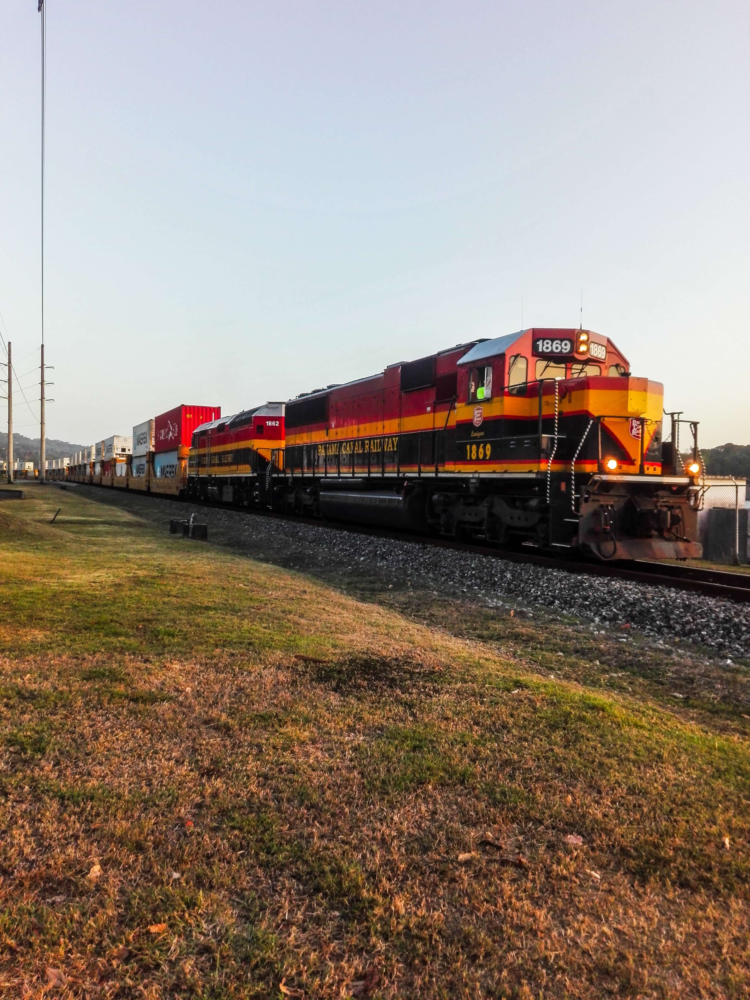

To provide you an enterprise distribution that focus on specific enterprise needs,
we completely build from scratch a new distribution around a modern kernel and tools.
We cleaned out of the distribution outdated or obsolete software.

Using a channel based updates distribution let you control which version you want to base your infrastructure on and when you want to update it.

Modern infrastructure runs on containers, it brings you flexibility and lifecycle management required to provide top notch services.

We all know that operating system upgrade is a tricky process that can ruin your day.
Because we want to give you the slickest and straight forward experience for enterprise OPS, we provide an error free upgrade process.
Reducing the amount of boot time required for our distribution is one of our main focus.
To do that, we just remove no longer required layers such as heavy bootloader and let UEFI firmware call for the OS directly.